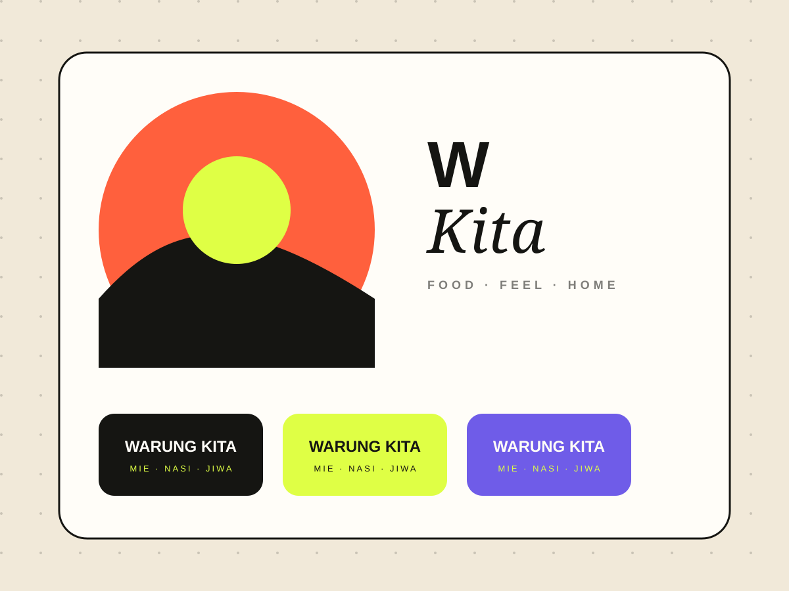
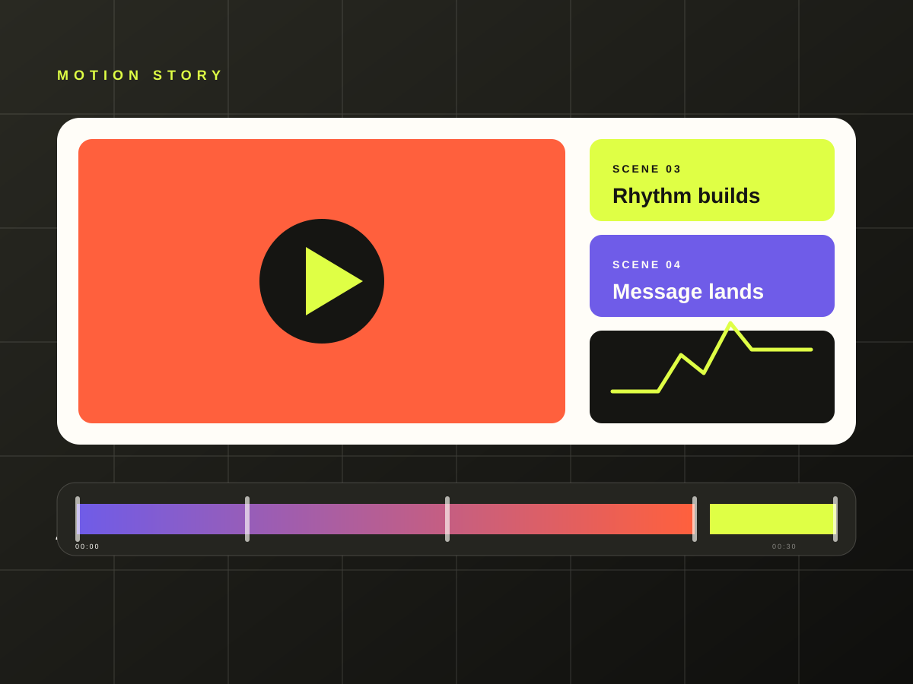
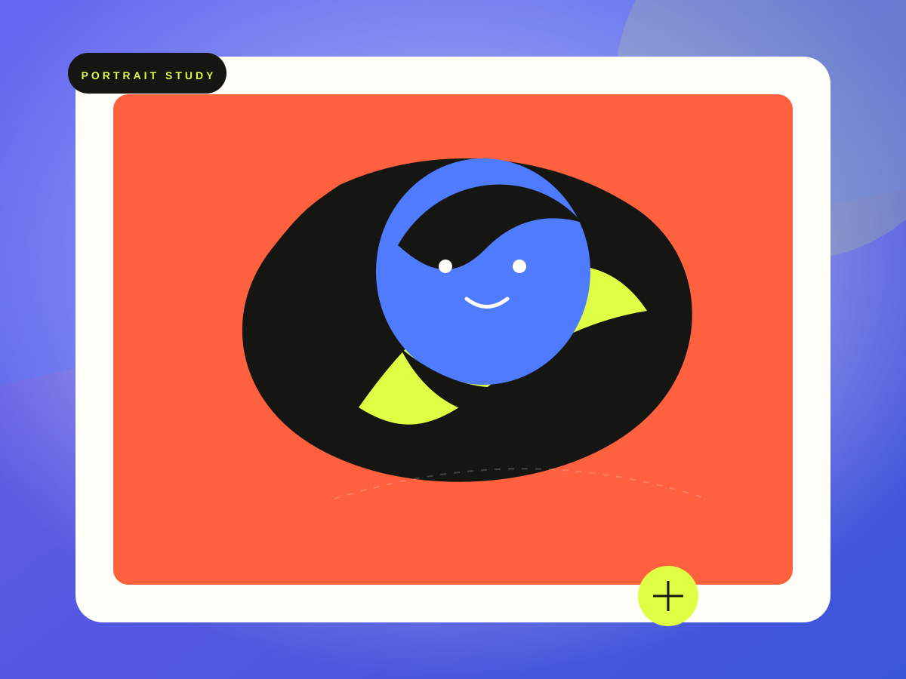

Desain
Saya suka cara meracik hierarki, warna, dan tipografi sampai sebuah pesan terasa jelas sejak pertama kali dilihat.
Make it clearPersonal brand · 2026
Desainer dari Rengat, Riau yang passionate pada desain, Canva, video, dan foto. Saya mencari cara mengubah ide sederhana menjadi sesuatu yang terasa dekat, jelas, dan sulit dilupakan.
01 / Tentang saya
Bukan sekadar hiasan. Setiap pilihan warna, bentuk, dan kata memiliki alasan.
Saya suka bagian di mana ide yang berantakan perlahan berubah menjadi sesuatu yang rapi, berwarna, dan hidup.
— Fajar SeptiawanSaya Fajar Septiawan. Saya percaya desain bukan hanya soal estetika, tetapi juga cara kita berkomunikasi, membawa orang lebih dekat, dan membuat pesan terasa lebih mudah diingat.
Sekarang saya terus belajar, bereksperimen, dan membangun personal brand ini sebagai ruang untuk menampilkan cara saya melihat dunia.
02 / Passion saya
Passion saya tidak selalu harus rumit. Kadang ia hadir sebagai rasa ingin tahu, detail kecil, atau ingin membuat sesuatu terasa lebih baik.
Saya suka cara meracik hierarki, warna, dan tipografi sampai sebuah pesan terasa jelas sejak pertama kali dilihat.
Make it clearSaya menyukai alat yang membuat ide bisa bergerak cepat, tanpa kehilangan rasa personal di setiap detailnya.
Make it possibleSaya menikmati proses menyusun potongan, ritme, dan transisi supaya cerita punya napas yang lebih hidup.
Make it moveDari tone sampai detail kecil, saya suka membangun suasana foto yang terasa hidup dan personal.
Make it felt03 / Arah personal brand
Personal brand ini bukan resume. Ini ruang untuk menunjukkan proses, rasa ingin tahu, dan ketertarikan saya terhadap visual.
Belajar dan mengeksplorasi alat baru.
Menjadikan proses sebagai bagian dari karya.
Menemukan cara untuk selalu melihat lebih dekat.
04 / Visual playground
Beberapa elemen visual untuk menunjukkan bagaimana saya melihat rasa, warna, dan cerita.


